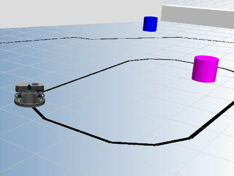

Camera Example
This example illustrates the use of the Camera on Robotino. Robotino is equipped with a color camera with VGA resolution and using this Camera, we can make Robotino detect a black line on the floor.
Contents

Description
Using the color camera on Robotino, we can obtain images from Robotino. After obtaining the images, a Prewitt Edge Detector Filter is applied and the x-position of the line is calculated. Based on that the x-velocity, y-velocity and omega values are calculated for Robotino.
Code explanation
First we will need to construct objects that we will be requiring in our program. In this program, we will require objects of Com, OmniDrive, Camera and Bumper. This is done as follows.
ComId = Com_construct; OmniDriveId = OmniDrive_construct; CameraId = Camera_construct; BumperId = Bumper_construct;
Upon successful contruction of the objects, an Id is returned for each object. This Id is used later when communicating with Robotino. Now we need to set the address of Robotino and then connect to it. This is done as follows.
Note the IP address and port number might be different
Com_setAddress(ComId, '127.0.0.1:8081');
Com_connect(ComId);
Once we are connected to Robotino, we need to bind each of the object we created to Robotino using the ComId. This can be done as follows.
OmniDrive_setComId(OmniDriveId, ComId); Camera_setComId(CameraId, ComId); Bumper_setComId(BumperId, ComId);
We then start our "stop watch" to limit the example execution to 60 seconds.
tStart = tic;
We initiate a while loop based on the condition that Robotino's bumper hasn't detected a collision. And as explained in the 'Description' above, we obtain images from Robotino's camera, apply an edge detection filter, detect the x position of the line and move Robotino accordingly
while (Bumper_value(BumperId) ~= 1) tElapsed = toc(tStart); % If 60 seconds are elapsed then exit while loop if(tElapsed >= 60 ) break; end; if ~(Camera_setStreaming(CameraId, 1) == 1) disp('Camera_setStreaming failed.'); end; if (Camera_grab(CameraId) == 1) img = Camera_getImage( CameraId ); threshold = 50; image(img); title('An image from the camera onboard Robotino') % Prewitt-Filter Fx = [-1 0 1;-1 0 1;-1 0 1]; Fy = [-1 -1 -1;0 0 0;1 1 1]; % region of interest: [m,n,c] = size( img ); roi = zeros(20,n,3); roi = img(m-19:m,:,:); % grayscale: gray = zeros(20,n); gray(:,:) = floor( (1/3)*( roi(:,:,1) + roi(:,:,2) + roi(:,:,3) ) ); % edge detection with Prewitt filters: edge = zeros(20,n); edge(:,:) = abs( floor( (1/2)*( convn(gray,Fx,'same')+convn(gray,Fy,'same') ) ) ); % threshold bw = zeros(20,n); for(i=1:20) for(j=1:n) if( edge(i,j) < threshold ) bw(i,j) = 0; else bw(i,j) = 255; end; end; end; % calculate x-position of line: sum = 0; for(j=2:n-1) if( bw(1,j) == 0 ) sum = sum + j; break; end; end; for(j=n-1:-1:2) if( bw(1,j) == 0 ) sum = sum + j; break; end; end; for(j=2:n-1) if( bw(20,j) == 0 ) sum = sum + j; break; end; end; for(j=n-1:-1:2) if( bw(20,j) == 0 ) sum = sum + j; break; end; end; % detected x-position of line posx = ceil(sum/4); % calculate velocities err = posx - round( length( img ) / 2 ); if( posx == 0 || posx == 320 ) vx = 0; vy = 20; omega = sign( err )*(-10); else if( (300 - abs( err )) > 10 ) vx = 300 - abs( err ); else vx = 10; end vy = floor( - err/2 ); omega = floor( - err/2 ); end; OmniDrive_setVelocity(OmniDriveId, vx, vy ,omega); end; end;
Once 60 seconds have been elapsed and the while loop is exited. We will need to disconnect from Robotino as follows.
Com_disconnect(ComId);
It is also recommended to destroy all objects that we created for our example. This can be done as follows.
Camera_destroy(CameraId); Bumper_destroy(BumperId); OmniDrive_destroy(OmniDriveId); Com_destroy(ComId);
Video
A video of this example running can be viewed on youtube .